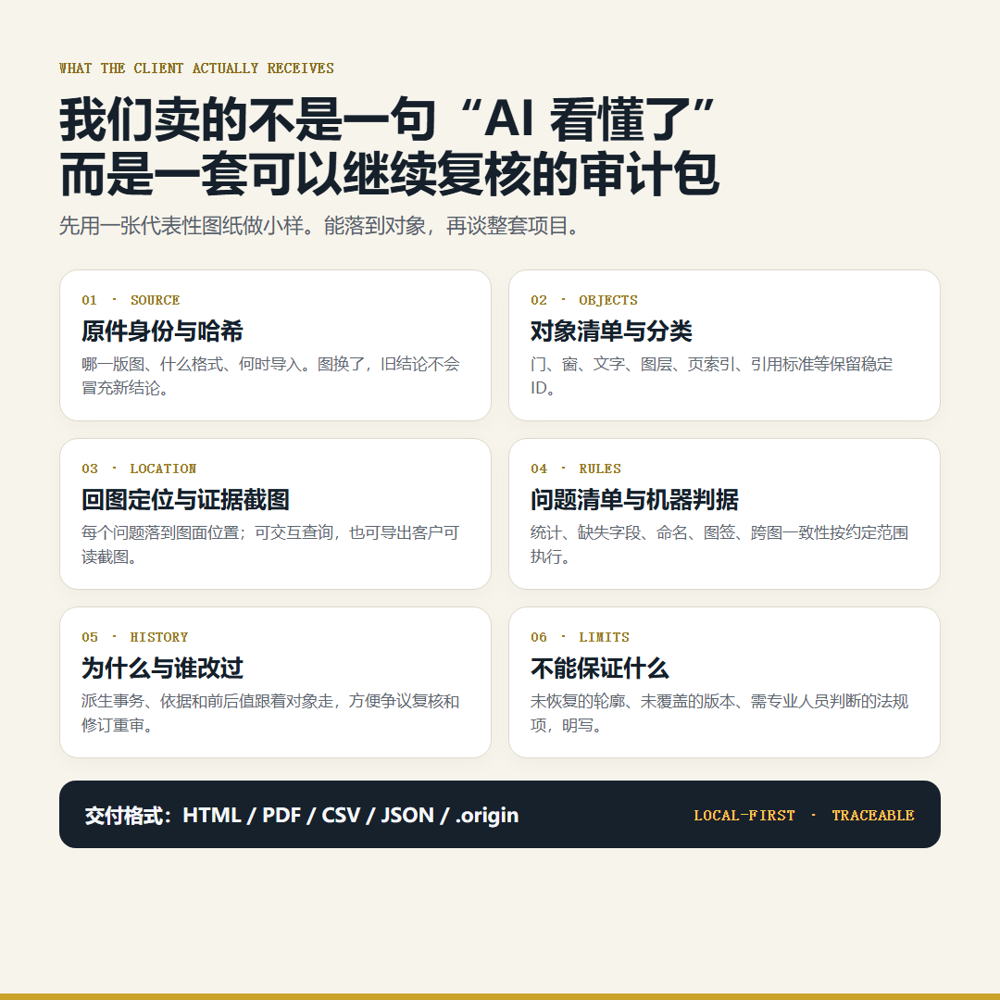
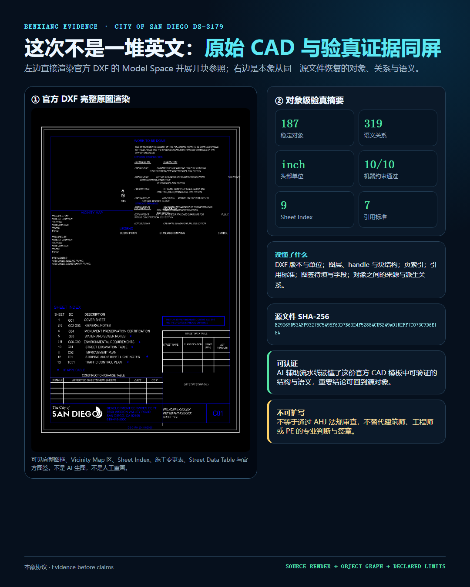
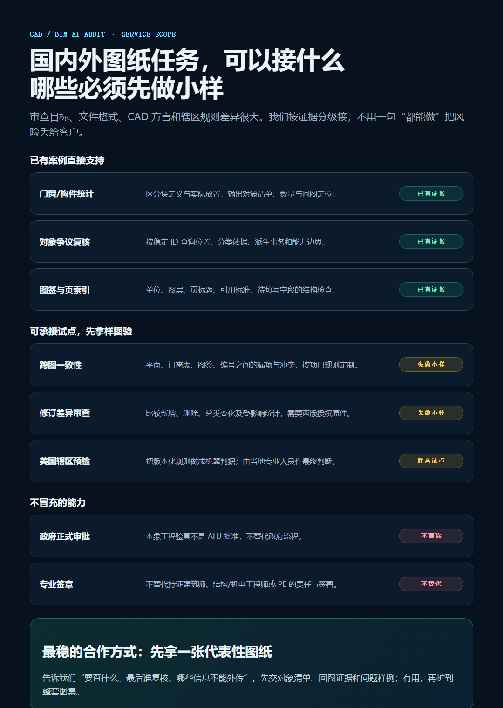

我们接什么：国内外 CAD、DWG、DXF 图纸的对象统计、逐项回图、表图核对、版本审查和规则预检。原图不能外传时，可在授权环境本地处理，只交脱敏投影与证据包。
先看硬证据：为什么截图 AI 数不清复杂 CAD
2026 年 8 月 13 日，我们把复杂 CAD 的脱敏总览图交给 qwen-vl-max，问它窗、门数量，以及“第 97 个窗”的稳定 ID、坐标和分类依据。
回答 7 个窗、5 个门；无法回答第 97 个窗，理由是截图没有 ID、坐标与实体属性。
194 个候选中排除 4 个块定义；190 个实际对象全部恢复位置锚点。

图 1 · 真实运行信息随图保留。基线 request ID：59f90fa1-f473-9b30-ba6f-1778dc0e5de5。
模型并不笨。它其实正确指出了问题：如果要对象 ID 和坐标，必须读取原始 CAD 实体。把一张总览图当成完整 CAD，再要求模型稳定数清整图，本来就不合理。
不是把 7 猜成 168，而是交付 168 个对象
194 = 4 个块定义模板 + 190 个实际放置对象
190 = 168 个窗 + 22 个门 + 0 个未分类本象没有把 168 压成一行日志。每个门窗保留稳定 handle、分类依据、载荷指纹和位置证据。客户质疑“这樘窗为什么算进去”，可以直接定位对象，而不是重新问一次 AI。

图 2 · 190/190 个模型空间门窗对象恢复位置锚点，可按对象 ID 查询。

图 3 · 单对象 opening:38A：坐标、写入事务、解码依据和复核命令同时保留。
截图式 AI 给答案；对象级审计交对象。答案可以复制，对象可以继续查。
边界也写进交付包：168 是窗樘/窗洞对象，不是玻璃片；LibreDWG 独立确认的是总数 194，不是 168/22 分类；精确轮廓、朝向与 bbox 尚未恢复。
项目交付的不是聊天记录

国外图纸：已经验证到哪里
美国案例来自 City of San Diego 官方 DS-3179 Construction Plan DXF 模板。导入后得到 187 个对象、319 条关系、10/10 条可判定约束，并识别 inch 单位、9 个页索引、7 项引用标准和待填写字段。

图 4 · 左侧是官方 DXF 源实体和块参照的完整渲染，右侧是同一源文件的对象、关系、语义和能力边界。
更正：上一版可视投影没有展开 DXF 块参照，又把多行 CAD 文字按单行 SVG 排版，因此看上去只剩重叠英文。源文件没有拿错，错的是渲染层。新版可见完整图框、Vicinity Map 区、Sheet Index、施工变更表、Street Data Table 与官方图签。
这证明美国官方 DXF 的对象化和模板语义预检能力，不等于全美法规审查。本象工程验真不是 AHJ 批准，也不替代持证建筑师、工程师或 PE 的责任与签章。
现在可以承接哪些 CAD AI 任务
- 门窗、设备、构件等对象统计与逐项回图；
- 图层、命名、图签、页索引、待填字段检查；
- 平面图、门窗表、编号和说明之间的一致性预检；
- 两版图纸的新增、删除、分类变化和影响范围审查；
- 业主或辖区 CAD 标准的机器预检，与专业人员联合复核；
- 客户图纸不外传场景下的本地处理与脱敏证据交付。

带一张图和一个问题来，先做小样
告诉我们：最想查什么、怎样算通过、哪些信息不能外传。我们先交对象清单、回图证据、问题样例、规则口径和能力边界；有用，再扩到整套图集。
微信：hecare888 邮箱：hefangsheng@gmail.com
可承接门窗/设备统计、表图核对、图签检查、版本差异、规则预检及其他边界明确的 CAD AI 任务。作者团队还提供 U-King 多 AI 安装与使用工具，可一键安装和使用 Claude Code、Codex、Hermes。
邮件提交 CAD 小样需求